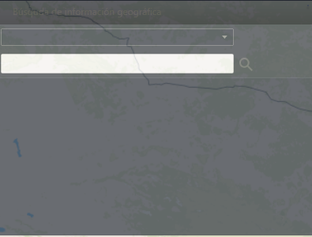

Consulta de dirección
La dirección de destino se puede consultar de acuerdo con el tipo de objetivo y las palabras claves de dirección, de modo
que el usuario puede realizar la ubicación en el mapa.
| 1. | Haga clic en la barra de herramientas del mapa 〖 
Fig 11 Consulta de dirección |
| 2. | Ingrese los condiciones de consulta: haga clic en el botón desplegable para seleccionar el tipo de destino; ingrese las palabras claves de dirección. |
| 3. | Haga clic en el botón 〖 |
| 4. | Haga clic en un resultado de una consulta en la lista de resultados para ubicar la dirección en el mapa. |